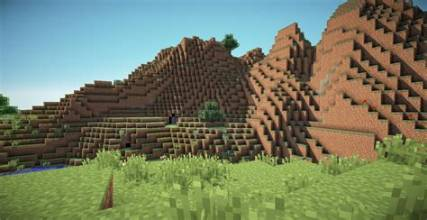
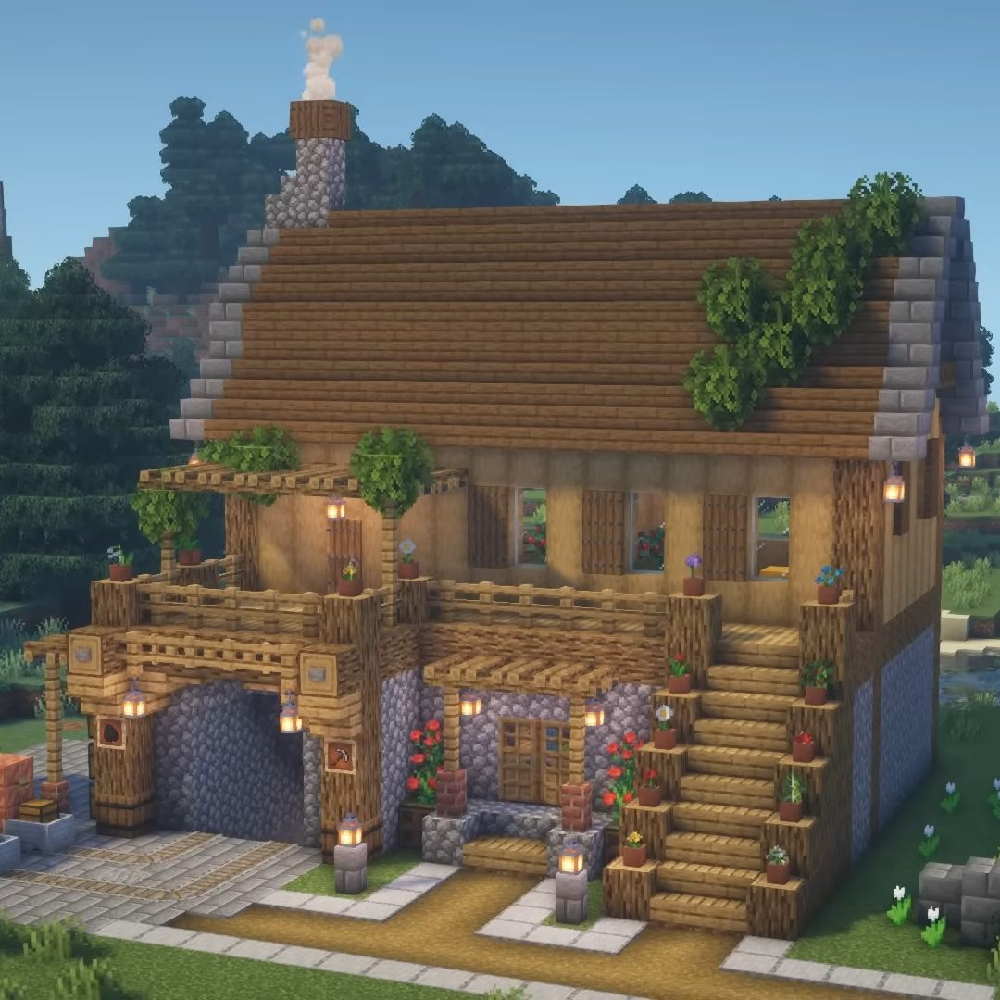

Introduction
Minecraft is one of the most popular games in the world. In this game, players can build houses, explore caves, collect items and do many other things. At first, it may look like just a game where we break and place blocks. But there is actually a lot more to it.
I think one of the best things about Minecraft is that players can do things in their own way. There is no single method to build something or survive in the game. We have to think and decide what to do next.

How Minecraft Teaches Problem-Solving
1. Planning Things
Suppose we want to build a big house in Minecraft. We cannot just start building without collecting anything. First, we need wood, stone and other materials. We also need to decide how the house should look. This teaches us to plan things before starting a task.
2. Learning From Mistakes
Sometimes we may lose our items or get attacked by monsters. This can be frustrating, but it also teaches us to be more careful. We can try a different way next time instead of making the same mistake again.

3. Using Logic
Minecraft also has something called Redstone. It can be used to make automatic doors, traps and other machines. To make these things work, we need to connect different parts properly. If the machine does not work, we have to find out what went wrong.
Some Skills We Learn
While playing Minecraft, we can practise many useful skills. Some of them are:
- Creative thinking
- Planning and decision-making
- Managing resources
- Working with friends
- Being patient
How to Solve a Problem
We can follow a few simple steps when we face a problem in the game.
- Understand what the problem is.
- Check what resources we have.
- Think of a possible solution.
- Try the solution.
- If it does not work, try another way.
Minecraft Activities and Skills
| Activity | Skill Learned |
|---|---|
| Building a house | Planning |
| Surviving monsters | Decision-making |
| Making Redstone machines | Logical thinking |
| Playing with friends | Teamwork |
If you want to know more about the game, you can visit the official Minecraft website.
There is also a Minecraft Education website that shows how the game can be used for learning.
Conclusion
Minecraft is not only about building things and fighting monsters. It can also help us learn how to plan, think carefully and solve problems. When something goes wrong in the game, we get another chance to try and do it better.
In my opinion, Minecraft is a good example of how we can learn new things while having fun. The skills we practise in the game can also help us in our daily lives.